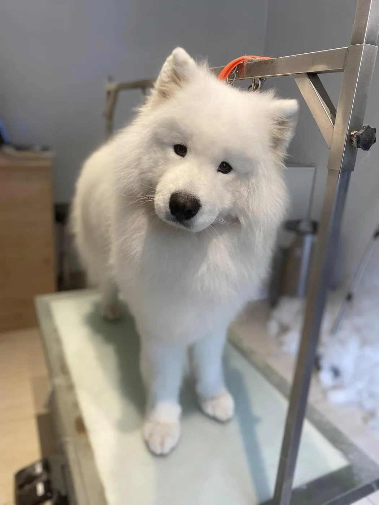
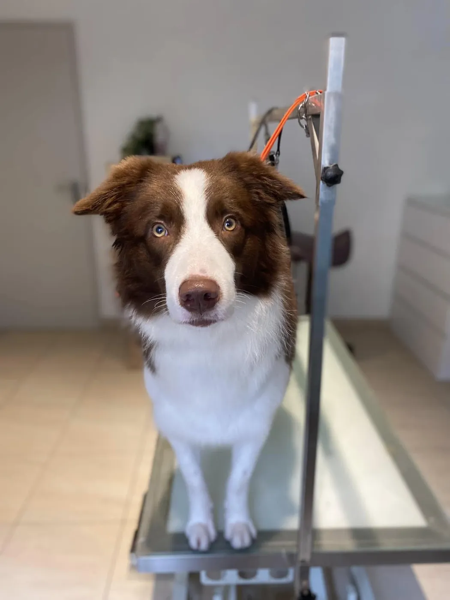
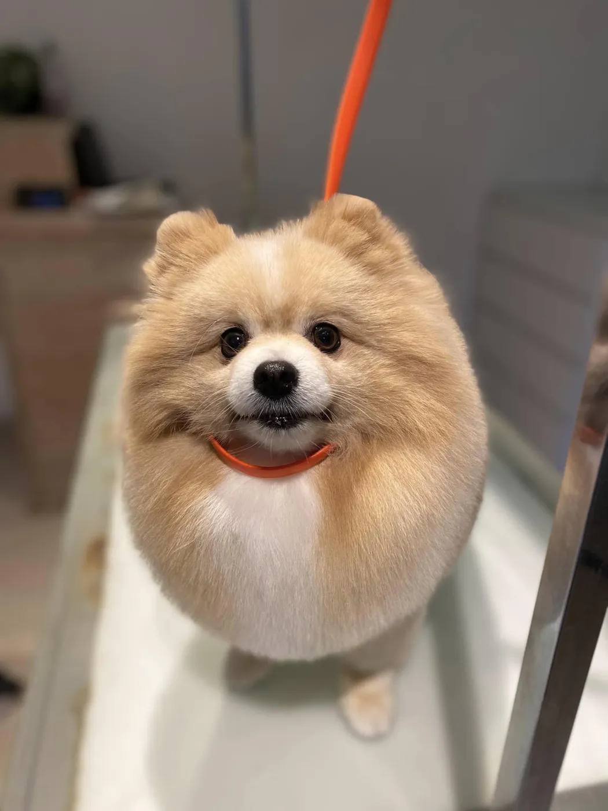
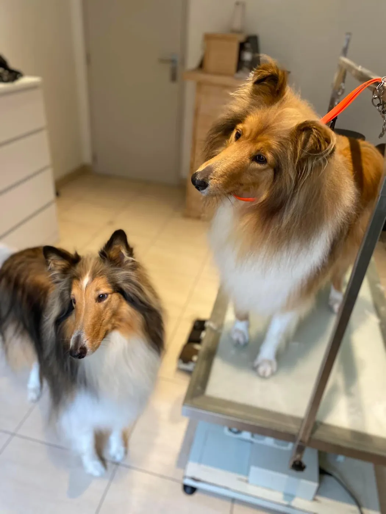
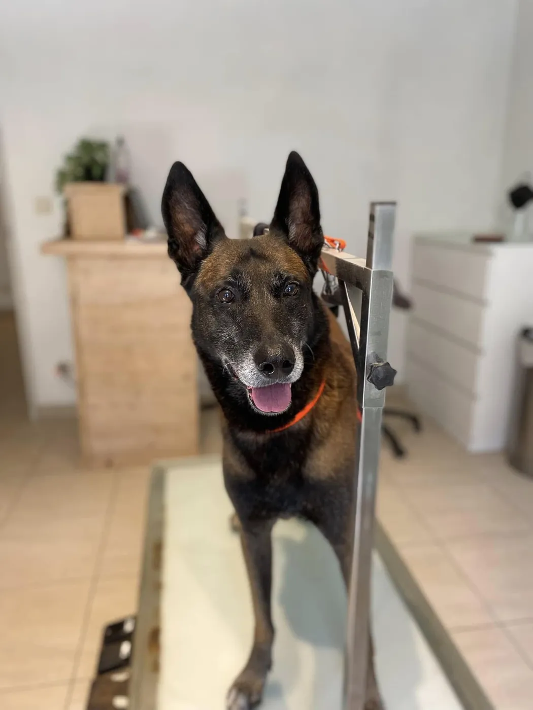
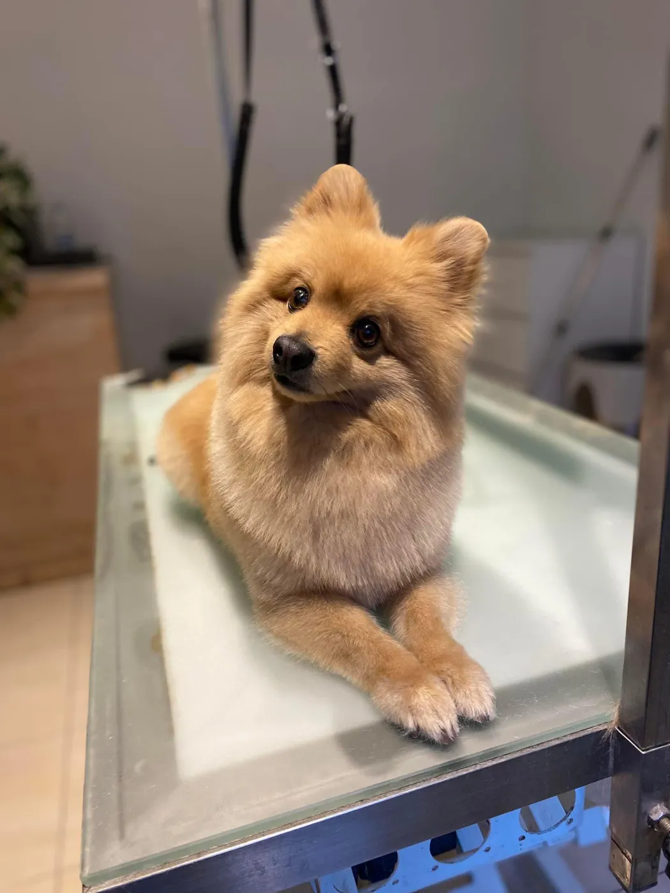
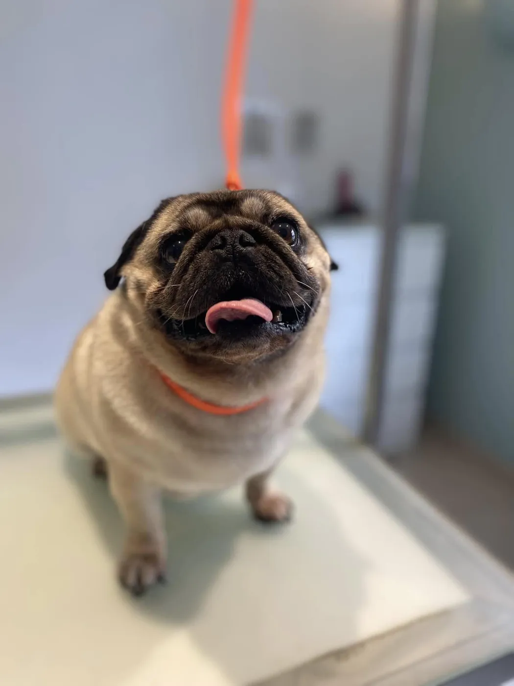
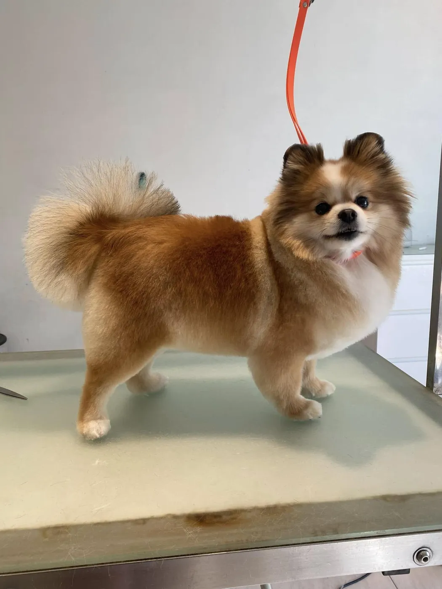
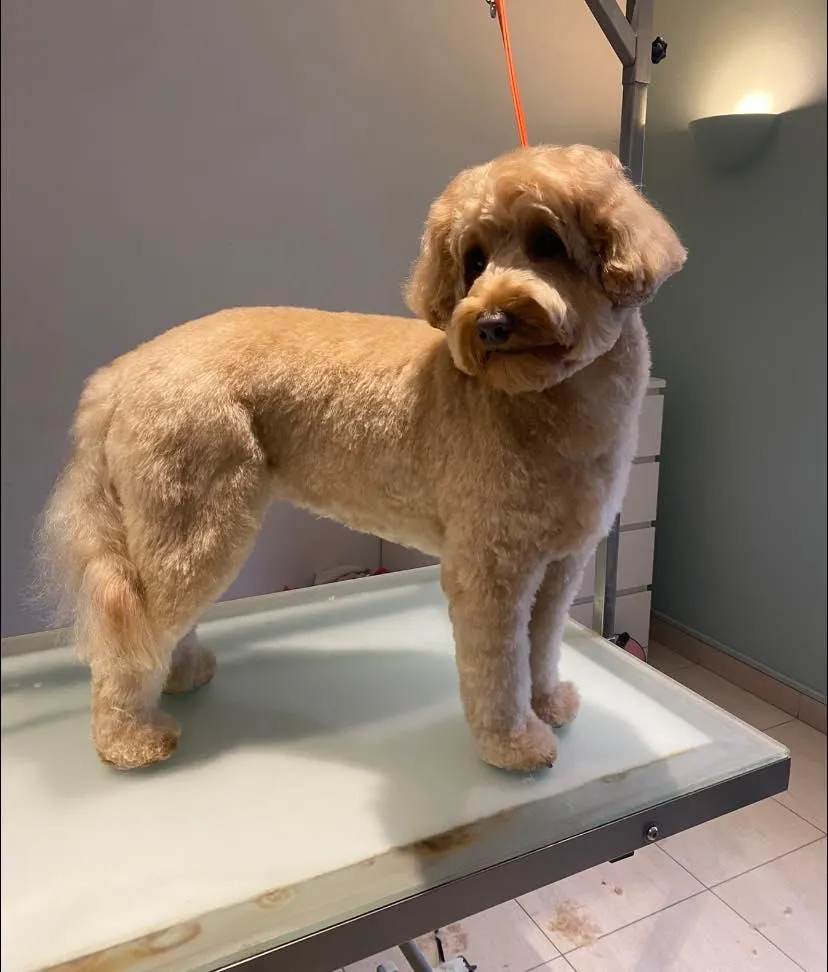

Op de tafel
Weer helemaal tip-top.
Een volledige beurt van kop tot staart, op het tempo van je hond. Groot of klein, krullen of dikke onderwol.
- Wassen
- Uitblazen
- Borstelen
- Knippen
- Scheren
- Oren reinigen
- Nagels knippen
- Gratis puppygewenning
Vaste gasten
Na de beurt.
Zo gingen ze naar huis. Een greep uit de fotogalerij van het salon.


















Voor de kleintjes
De eerste keer is gratis.
Een puppy moet het salon eerst leren kennen. Bij de puppygewenning maken we kennis met de föhn, de tondeuse en het knippen van de pootjes, rustig en op een positieve manier.
Föhnwarme lucht leren kennen
Tondeusehet geluid en het gezoem
Pootjesnageltjes en voetjes
Wat baasjes zeggen
4,9gemiddeld op 47 Google-reviews
"Een warm welkom en alles naar wens zeker een aanrader om eens langs te gaan"Ruth
"Royals Trimsalon is the place to be om je trouwe viervoeter hartstikke leuk te laten verwennen."Mischa VB
Afspraak
Kom langs in Maldegem.
Kies online een moment dat past, of bel even. Het salon ligt aan de Stationsstraat 92 in Maldegem.
Royals
Stationsstraat 92, 9990 Maldegem
Maandaggesloten
Dinsdag tot zaterdag8 tot 17 u
Zondaggesloten